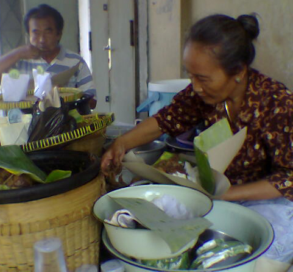
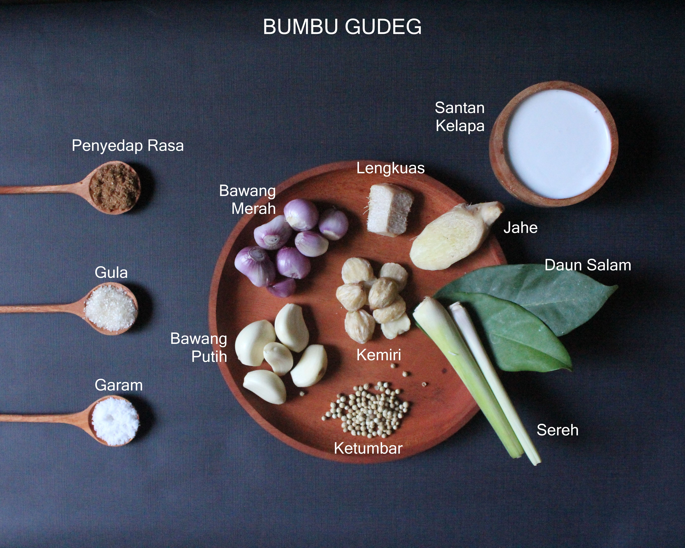
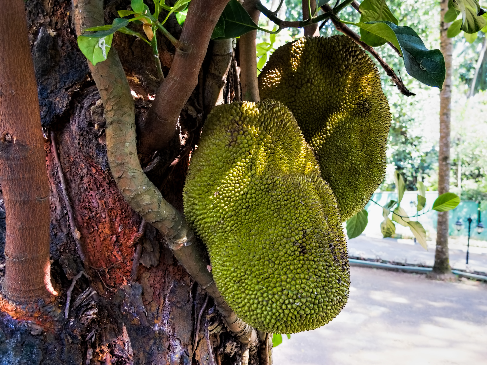
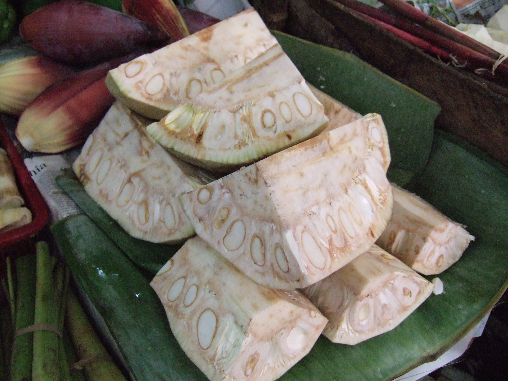
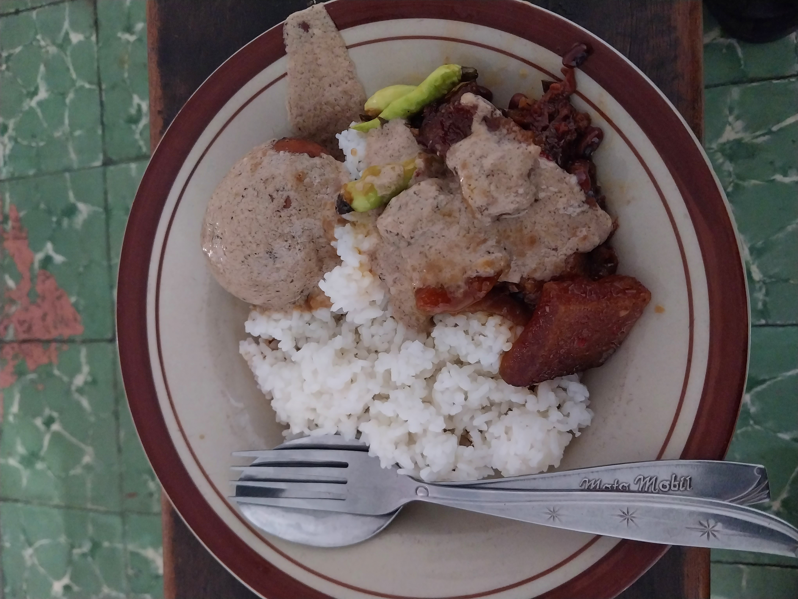

Gudeg (Jawa: Guděg) adalah hidangan khas Daerah Istimewa Yogyakarta yang terbuat dari nangka muda yang dimasak dengan santan.
Perlu waktu berjam-jam untuk membuat hidangan gudeg. Warna cokelat biasanya dihasilkan oleh daun jati yang dimasak bersamaan. Gudeg biasanya dimakan dengan nasi dan disajikan dengan kuah santan kental (areh), ayam kampung, telur, tempe, tahu, dan sambal goreng krecek.
Gudeg sangat populer di Jawa, hidangan ini merupakan hidangan populer baik sebagai masakan rumahan maupun hidangan jalanan. Gudeg juga diproduksi secara industri sebagai makanan kaleng. Gudeg juga bisa ditemui di luar Indonesia, khususnya di negara tetangga seperti Malaysia dan Singapura.
Sejarah

Penjual Gudeg
Gudeg dibuat dari buah nangka yang tumbuh di banyak pulau di Indonesia, khususnya di Jawa, dan merupakan tanaman pangan yang cukup penting. Sejumlah besar rempah-rempah dan bumbu tertentu digunakan dalam proses perebusan, rempah ini juga meningkatkan masa simpan gudeg.
Di Jawa Tengah, ada legenda yang mengaitkan asal-usul gudeg dengan berdirinya Kesultanan Mataram pada akhir abad ke-16. Dikisahkan bahwa pada saat itu pejuang yang membuka hutan untuk pembangunan ibu kota negara baru di wilayah Yogyakarta saat ini tidak mendapat pasokan makanan yang memadai. Sementara itu hanya pohon nangka dan kelapa yang tumbuh subur di hutan tersebut. Saat masih muda buah nangka keras, dan tidak dapat dimakan mentah, mereka pun merebus buah nangka muda dalam santan dalam panci logam besar dan mengaduknya dengan papan kayu. Proses memasak seperti ini dalam bahasa jawa sehari-hari disebut hangudêk (jw. Hangudek)—"mengaduk". Dari kata inilah menurut legenda, menjadi asal mula nama makanan yang ditemukan oleh prajurit Mataram tersebut, "Gudeg".
Proses Pembuatan

Bumbu Nangka
Gudeg dibuat dari daging buah nangka yang masih mentah. Berbeda dengan daging buah nangka matang, yang lembut, kuning cerah, berminyak, dan rasanya sangat manis, nangka mentah memiliki konsistensi padat dan agak kering, bergetah, berwarna keputihan atau krem ringan, dan tidak bisa dimakan mentah. Setelah kulitnya dikupas, nangka muda dipotong kecil-kecil dan direbus terlebih dahulu dalam air mendidih sampai lunak. Setelah itu, potongan nangka dituangkan dengan santan—sering dicampur dengan air kelapa, dibumbui dengan bumbu tertentu dan direbus lama—biasanya selama 4–6 jam.

Nangka muda yang belum dipetik

Nangka muda yang sudah dipotong
Warna gudeg dihasilkan terutama oleh bumbu rempah-rempah yang digunakan. Rempah-rempah ini juga memberikan cita rasa utama rasa gudeg, karena daging mentah nangka muda sebenarnya tidak memiliki rasa khusus. Gudeg hadir dalam berbagai warna, mulai dari hampir putih atau krem muda hingga merah tua atau cokelat. Variasi warna hidangan hidangan ini menjadi julukan jenis gudeg tersebut, gudeg putih dan gudeg merah. Variasi gudeg putih disiapkan dengan rempah-rempah yang tidak terlalu mengubah warna produk asli: lumbang, ketumbar, lengkuas, jahe, bawang merah, bawang putih, lada hitam. Pada gudeg merah, rempah-rempah dan bumbu lain ditambahkan selain bumbu di atas, yang memberi warna lebih gelap pada bubur nangka yang dihasilkan. Pewarna merah biasanya dari daun jati dan Moringa oleifera, biasanya juga ditambahkan terasi, yang memberi nuansa warna merah-kecokelatan. Selain itu, di Indonesia modern, teh celup terkadang dimasukkan ke dalam hidangan selama proses perebusan untuk memberikan warna gelap dan rasa asam yang lebih pekat pada gudeg. Teh ini kemudian diangkat sesudah hidangan matang. Dalam semua jenis gudeg—baik gudeg kering dan basah, atau gudeg merah dan putih—biasanya ditambahkan gula aren, sebagai pemanis. Rasa manis inilah yang menjadi cita rasa khas gudeg.
Penyajian
Jika disajikan sendiri, gudeg dapat dianggap sebagai makanan vegetarian, karena hanya terdiri dari nangka mentah dan santan. Namun, gudeg biasanya disajikan dengan telur atau daging ayam. Gudeg sering kali disajikan dengan nasi putih dan ayam, baik opor ayam atau ayam goreng, telur pindang, opor telur atau telur rebus biasa, tahu dan/atau tempe, serta sambel goreng krecek (rebusan yang terbuat dari kulit sapi renyah).
Gudeg dapat dikemas ke dalam besek (kotak yang terbuat dari bambu) atau kendil (guci tanah liat), atau kalengan. Gudeg kalengan bisa bertahan hingga satu tahun, meski rasanya tidak sebagus yang baru dimasak.
Warung dan restoran yang menyajikan gudeg dapat ditemukan di seluruh kota di Indonesia, seperti Jabodetabek. Gudeg adalah hidangan populer di restoran Jawa, dan dapat ditemukan di negara tetangga, seperti Singapura.
Varian
Ada beberapa jenis gudeg; kering, basah, gaya Yogyakarta, gaya Solo, dan gaya Jawa Timur. Gudeg kering hanya memiliki sedikit santan dan memiliki sedikit kuah. Gudeg basah mengandung lebih banyak santan. Gudeg yang paling umum berasal dari Yogyakarta, dan biasanya lebih manis, lebih kering, dan berwarna kemerahan karena penambahan daun jati sebagai pewarna. Gudeg solo dari kota Surakarta lebih berair dan berkuah, banyak santan, dan berwarna keputihan karena umumnya tidak ditambahkan daun jati. Gudeg Yogyakarta biasa disebut "gudeg merah", sedangkan gudeg Solo disebut juga "gudeg putih". Gudeg gaya Jawa Timur memiliki rasa yang lebih pedas dibandingkan dengan gudeg gaya Yogyakarta yang lebih manis.
Gudeg secara tradisional diasosiasikan dengan Yogyakarta, dan Yogyakarta terkadang dijuluki "Kota Gudeg" (kota gudeg). Pusat restoran gudeg Yogyakarta berada di kawasan Wijilan sebelah timur Kraton Yogyakarta.

Gudeg basah khas Solo
Seperti halnya banyak masakan Indonesia lainnya, berbagai jenis gudeg secara tradisional dianggap sebagai kuliner khas kota atau daerah tertentu dan dijuluki dengan nama "geografis" masing-masing. Oleh karena itu, gudeg merah sering disebut gudeg "Yogyakarta", dan gudeg putih disebut gudeg "Surakarta", sesuai dengan nama kota asalnya di Jawa Tengah tersebut.
Penjualan
Di Jawa, gudeg merupakan hidangan populer di rumah, restoran, dan jajanan kaki lima. Gudeg dijajakan dalam industri katering dari semua tingkatan, dari restoran, warung makan, hingga gerobak pedagang kaki lima, atau menggunakan mobil khusus untuk berjualan. Di warung-warung dan toko-toko tradisional, kotak kardus atau keranjang kecil yang dianyam dari bambu sering digunakan sebagai wadah hidangan gudeg.
Gudeg yang dijual dalam mobil bak dan melayani pesan antar
Salah satu daya tarik Yogyakarta adalah Jalan Wijilan, yang terletak di bagian tengah kota di sekitar Keraton Yogyakarta, dipenuhi dengan puluhan restoran dan toko yang mengkhususkan diri menjual gudeg, banyak di antaranya buka 24 jam. Banyak pencinta gudeg atau wisatawan kuliner datang ke sini setiap hari. Gudeg juga didistribusikan dari sini ke daerah atau kota di sekitanya. Beberapa restoran "gudeg" lokal ini telah berdiri lebih dari enam puluh tahun dan terkenal hingga di luar kota Yogyakarta.
Warung Gudeg di Jalan Wijilan, Yogyakarta
Sejak tahun 1920-an, industri makanan Indonesia telah memproduksi makanan kaleng siap saji. Gudeg juga kadang dijual sebagai makanan kalengan, gudeg kaleng ini biasanya berisi gudeg matang atau setengah matang yang dilengkapi dengan bumbu dan rempahnya. Namun, ada pula gudeg kaleng yang hanya berupa rebusan daging nangka cincang dan harus dimasak sendiri.